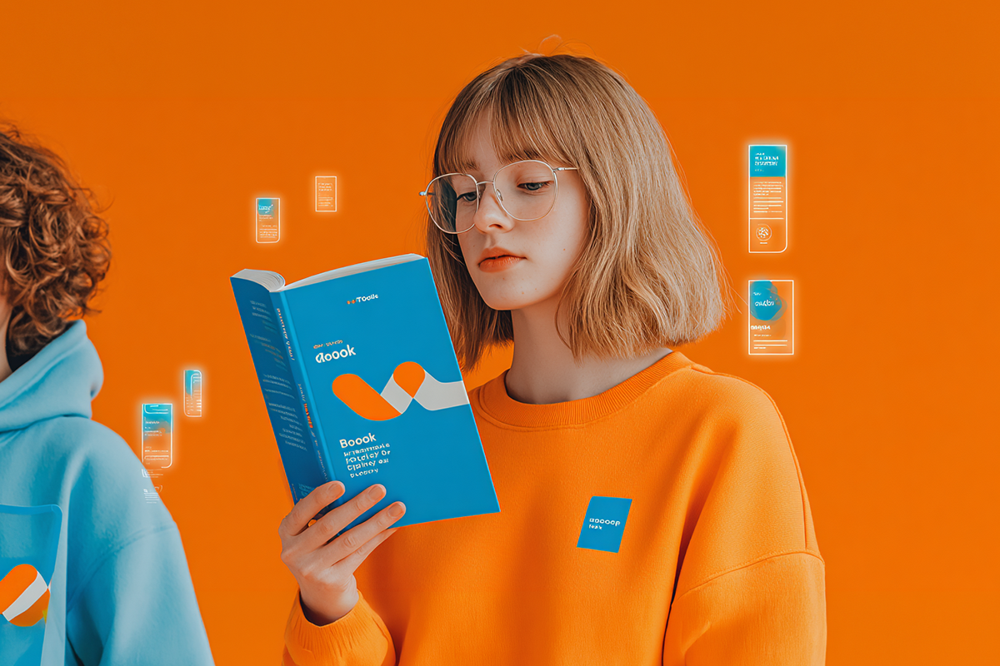

Los nuevos 'book clubs'
Leer para volver a encontrarnos
Leer para volver a encontrarnos
Es típico de las series o películas tipo Jane Austen. Tres personas leyendo en una sala iluminada, comentando la historia o los personajes por largo rato. Son los famosos “clubs de lectura” que se remontan al siglo XVII en el Reino Unido y que comenzaron con el Club del Libro Dalton.
En Estados Unidos, durante el siglo siguiente, se consolidaron como espacios de participación, aprendizaje y emancipación femenina. Las mujeres leían en grupo lo que no se les permitía aprender en la vida real. Pero su verdadero auge moderno vino en 1996, cuando Oprah Winfrey lanzó un book club en su programa, marcando un hito en la lectura moderna.
Hoy, este fenómeno vive una explosión digital. Lo vemos frecuentemente en TikTok con el hashtag #BookTok o en cuentas de lectura masivas en Instagram. Sin duda, estamos viviendo un retorno de la lectura y, sobre todo, de la conversación en torno a ella.
Si bien normalmente la lectura se entiende como un espacio personal de reflexión o un pasatiempo íntimo, en su origen siempre ha sido colectivo, porque antes se hacía en voz alta y en comunidad. Después de la pandemia, ha vuelto esta idea de compartir lo que leemos y motivar a más personas a compartir sus reflexiones. Y no necesariamente hablamos de un espacio físico. Hoy muchos clubes de lectura conviven en grupos de WhatsApp, en foros de Discord o en comunidades de TikTok.

El impacto no es menor. Según datos de la industria editorial, libros publicados hace más de una década han vuelto a los rankings de ventas tras viralizarse en BookTok. Pasó con el libro “Tan poca vida” de Hanya Yanagihara. Publicado en 2015, se hizo viral el año pasado por videos publicados de personas llorando al terminar sus más de mil páginas.
Pero más allá de los números, lo interesante es el cambio en la forma de recomendar la lectura: ya no son solo los críticos literarios o los profesores quienes recomiendan libros, sino lectores comunes, muchas veces adolescentes o jóvenes, que hablan desde la emoción y la experiencia personal.
Durante décadas, el mundo editorial estuvo dominado por una elite cultural que definía qué valía la pena leer. Leíamos lo que el suplemento del diario recomendaba. Hoy, esa jerarquía ha comenzado a diluirse para bien.
BookTok y los clubes digitales abren espacio a géneros históricamente subvalorados, como el romance, la fantasía o la literatura juvenil. Es lo que ha pasado con todas las novelas románticas jóvenes, donde en TikTok los usuarios incluso les ponen cara a los personajes o suben fotos de cómo se los imaginan en la vida real.
Ocurrió con la saga “Alas de sangre”, que explotó en TikTok hasta convertirse en un fenómeno global que agotó todas sus ediciones. Los lectores no solo recomendaban los libros, sino que construían universos paralelos y recreaban escenas. Lo que antes era considerado “lectura liviana” hoy lidera rankings y amplía la noción de lo que entendemos por buena literatura.
Tal vez Jane Austen nunca imaginó que, dos siglos después, sus escenas de lectura colectiva renacerían en TikTok. Pero aquí estamos: leyendo, comentando y emocionándonos en comunidad, demostrando que los libros, lejos de desaparecer, siguen encontrando nuevas formas de reunirnos.
 Cultura
CulturaSé que suena raro hablar de calor extremo mientras en Chile todos están buscando la parka más gruesa del clóset.
 Cultura
CulturaEl hecho de que estemos entrando al mes de julio no se puede creer. Pero lo que tampoco se puede creer es la cantidad de artistas que han…
 Cultura
CulturaCuando hablamos de trabajos clásicos de la música chilena, siempre se nombran los discos de Violeta Parra, Víctor Jara, Los Jaivas o…